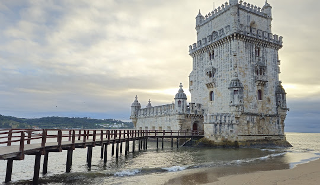

Portugal es uno de los paises mas antiguos de Europa. Su historia comenzo con pueblos celtas y romanos que habitaron la peninsula iberica hace miles de años. Mas tarde, los musulmanes ocuparon gran parte del territorio hasta la Reconquista cristiana.
En el siglo XII nació oficialmente el Reino de Portugal gracias al rey Alfonso I, tambien conocido como Alfonso Henriques. Desde ese momento, Portugal comenzo a expandir su territorio y fortalecer su poder maritimo.
Durante los siglos XV y XVI, Portugal se convirtio en una de las mayores potencias del mundo gracias a la Era de los Descubrimientos. Navegantes portugueses como Vasco da Gama y Fernando de Magallanes realizaron viajes históricos que abrieron nuevas rutas comerciales hacia Africa, Asia y America.
Lisboa se transformo en uno de los puertos mas importantes de Europa, recibiendo riquezas, especias y mercancías de diferentes partes del mundo.
En 1755 ocurrio el famoso terremoto de Lisboa, uno de los desastres mas grandes de la historia europea, que destruyo gran parte de la ciudad. Despues del terremoto, Lisboa fue reconstruida con un diseño moderno para la epoca.
En el siglo XX, Portugal paso por una dictadura que termino en 1974 con la Revolucion de los Claveles, un movimiento pacifico que devolvio la democracia al pais.
Actualmente Portugal es reconocido por su cultura, historia, arquitectura, gastronomia y turismo.